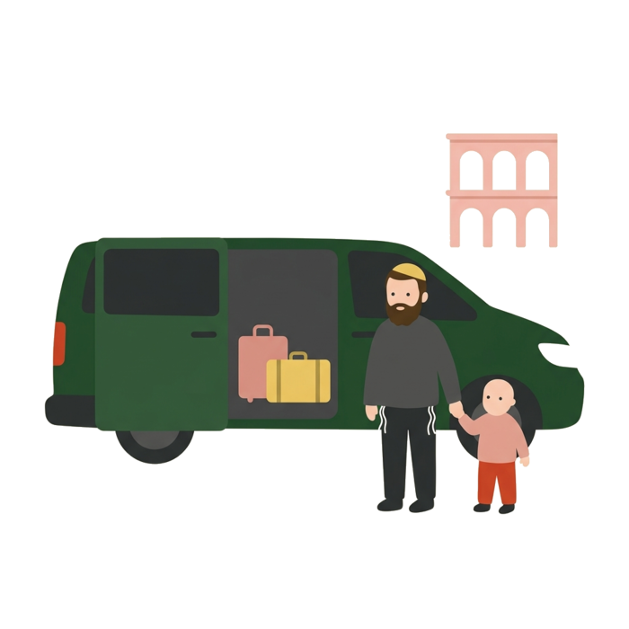
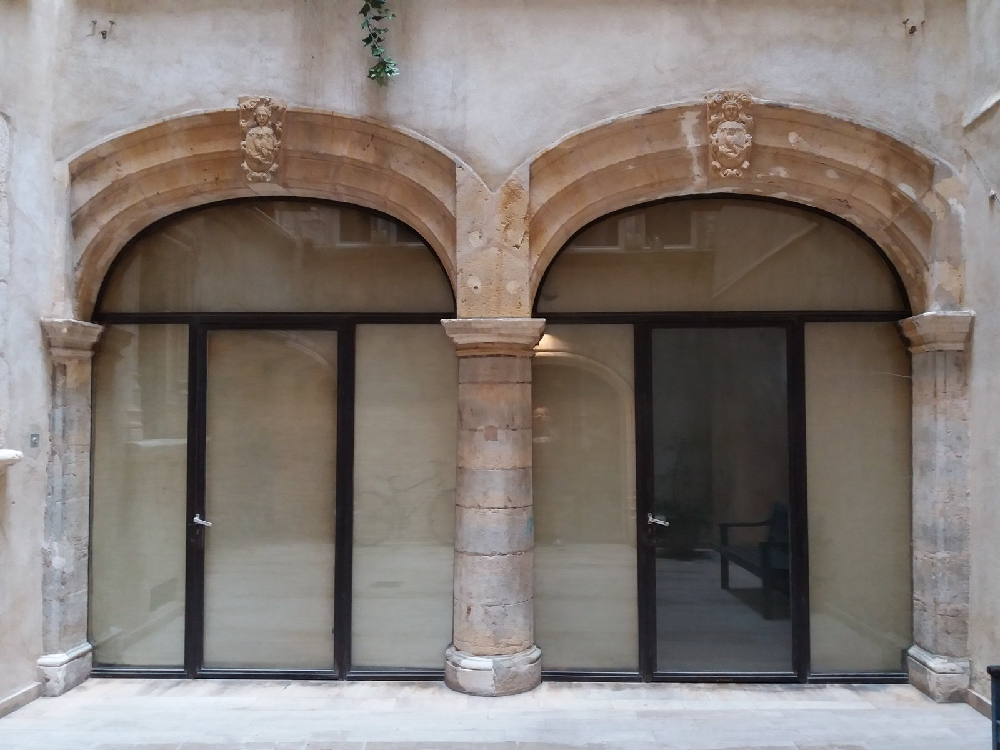
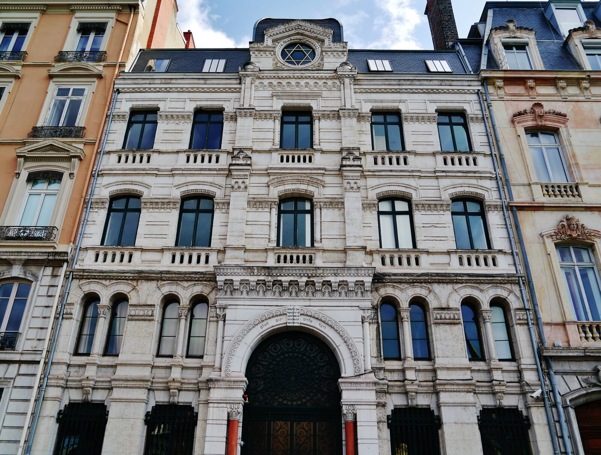
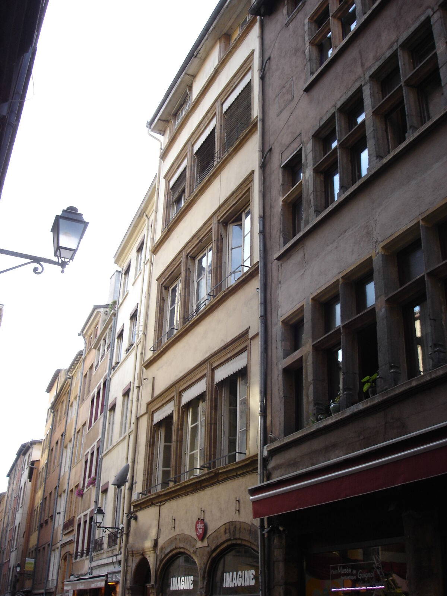
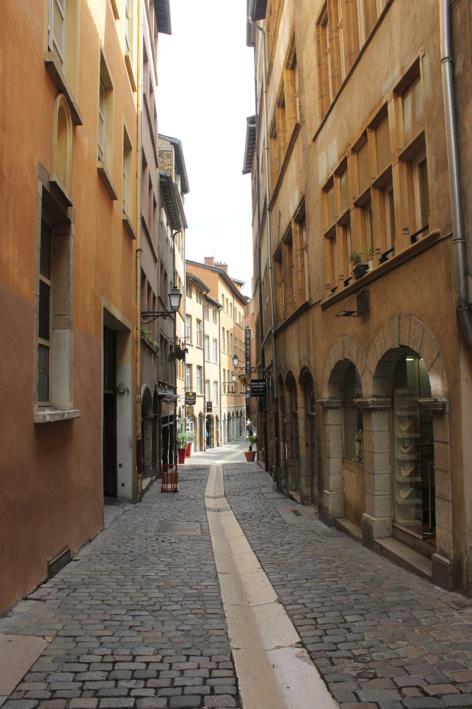

Home / Jewish Lyon guide / Lyon, the gateway to the Alps
Lyon, the gateway to the Alps
for the Jewish traveller on the way to the mountain
Lyon-Saint-Exupéry airport is about 2 h 10 from Courchevel and 2 h 30 from Val Thorens without traffic. Certified kosher groceries and butchers are in Lyon and Villeurbanne, not at the airport. Most Jewish families who ski in the French Alps land in Lyon, then drive two to three hours to the resort. Lyon-Saint-Exupéry airport is close to the autoroute, the city has kosher shops that open before you climb, and a Grande Synagogue worth three hours of your day. This page gives the drive times, the shuttle options and the shopping list. We guide in Lyon only: we do not sell transfers or stays.
- 13 resorts, drive times
- Kosher shops before the mountain
- 3 hour Stopover, 390 €
- Checked 7 October 2026

Why land in Lyon
- The airport. Lyon-Saint-Exupéry sits east of the city, with the autoroute network to Savoie and Haute-Savoie a short drive away. Altibus and Ben's Bus both run ski shuttles from it (see below).
- The station. Lyon Part-Dieu is the main train station of the city. If you come by rail, Part-Dieu is the point where you shop, rest or visit before the next leg.
- The motorway. The A43 leaves Lyon toward Chambéry and the Savoie valleys. The Tarentaise resorts (Courchevel, Méribel, Val Thorens, Les Arcs, La Plagne, Tignes, Val d'Isère) and Maurienne lie beyond it.
- The community. Lyon has certified kosher groceries, butchers and bakeries, a Beth Din and a Grande Synagogue. See kosher in Lyon and synagogues.
Drive times from the airport to each resort
These are typical times, without traffic, from Lyon-Saint-Exupéry airport by road, as listed by the ski directory j2ski.com. On a Saturday in February, or in snow, add one hour or more. Another transfer company, Alps2Alps, gives longer figures for some resorts (Courchevel 2 h 40, Méribel 2 h 30), so treat every figure as a range and ask your driver.
- Chamonix: 2 h
- Méribel: 2 h
- Courchevel: 2 h 10
- Megève: 2 h 10
- Les Gets: 2 h 10
- Les 2 Alpes: 2 h 10
- Morzine: 2 h 20
- Alpe d'Huez: 2 h 20
- Val Thorens: 2 h 30
- Tignes: 2 h 40
- Val d'Isère: 2 h 40
- Les Menuires, Les Arcs, La Plagne: not listed in that table. They sit in the same Tarentaise valleys as Courchevel and Val Thorens: ask your transfer company for the exact time.
Source: j2ski.com, Lyon St-Exupéry airport transfers (times 'approximate and often significantly affected by weather and traffic'); alps2alps.com.
Shuttles and private transfers
We do not sell transport. Here is what the airport and the operators publish.
- Altibus. Direct line from the airport to Val d'Isère, Tignes and Sainte-Foy-Tarentaise, most routes to Val Thorens and Les Menuires. Connections at Moûtiers or Aime stations for Courchevel, Méribel, Saint-Martin-de-Belleville and La Plagne. Winter timetable from 11 December 2026 to 3 April 2027, Friday, Saturday and Sunday, fares from 55 € for an adult.
- Ben's Bus. Listed on the airport website for Val d'Isère, Tignes, Les 2 Alpes, Courchevel, Méribel, La Plagne and others. Pick-up at the bus station, Terminal 1. Season not published on the airport page.
- Private vans and taxis. Alps2Alps and Alpine Fleet are among the transfer companies the airport and ski directories list. We name no taxi company: ask for a quote, and ask for a child seat if you need one.
A shared shuttle that runs on Saturday does not suit a family that keeps Shabbat. If you land on a Friday, leave a wide margin before candle lighting, or book a night in Lyon (see Shabbat in Lyon).
Kosher shopping before you go up 5
- Hypercacher Grocery17 rue Claudius-Pionchon, 69003 LyonMap
- Hypercacher Garibaldi Grocery, opened 202646 rue Garibaldi, 69006 LyonMap
- Lilly Market Grocery140 rue Dedieu, 69100 VilleurbanneMap
- Eric Farache Butcher28 rue Villeroy, 69003 LyonMap
- Maison William, Boucherie Dahan Butcher50 rue Tête-d'Or, 69006 LyonMap
Source: list of the Beth Din de Lyon, consulted on 8 September 2026, same entries as our kosher guide. Opening hours are not published: call first. Every shop closes early on Friday.
What to buy and how to carry it
We found no kosher shop published in the resorts and no delivery service from Lyon or Geneva to a resort. Bring what you need from Lyon.
- Shop in Villeurbanne or the 3rd and 6th arrondissements. The shops above are in town, not at the airport. Book your driver for the round.
- Bring a cooler bag and ice packs. Meat, fish and dairy travel two to three hours.
- Ask the Chabad rabbi for wine and challot. In Courchevel, the rabbi publishes that he helps with wine and challot for Shabbat. See kosher ski holidays.
A typical ski-week arrival
- 1
Land at Lyon-Saint-Exupéry
Choose a flight that lands before noon if you want to see the city. Send us your arrival time and your onward departure time.
- 2
Shop for kosher food
Your driver takes you to Hypercacher, Lilly Market or the butchers on the list. You buy for the week.
- 3
The Stopover, 3 hours
Your own transport drops you in Vieux Lyon. We guide you for three hours, including the inside of the Grande Synagogue on quai Tilsitt, subject to opening hours and security on the day. Your bags stay in the van.
- 4
Take the road
The driver picks you up at the same spot and takes the A43 toward your resort. Count two to three hours.
The Stopover: Jewish Lyon between the plane and the slopes
Three hours of private guiding in Vieux Lyon and inside the Grande Synagogue, which is closed to visitors outside the Heritage Days. Price: 390 € per group of 1 to 5 people, plus 35 € per person from the sixth to the tenth. Airport pick-up is possible on request, as a paid add-on on quote, and never included. See the Stopover tour.
Shabbat in Lyon, before or after the mountain
A family that arrives on a Thursday or Friday can keep Shabbat in Lyon and go up on Sunday. A family coming down on Thursday can sleep in Lyon before a Friday morning flight. We guide from Sunday to Friday morning, never on Shabbat or on Jewish holidays. See Shabbat in Lyon and where to stay.
Your Lyon stop on the map
Tap a marker for directions.




Lyon and the Alps: questions
How far is Lyon airport from Courchevel or Val Thorens?
Typically 2 h 10 to Courchevel and 2 h 30 to Val Thorens without traffic, according to j2ski.com. Another transfer company lists 2 h 40 for Courchevel. Winter roads and Saturday traffic add time.
Can we buy kosher food in the resort?
We found no published kosher shop in the resorts. Bring your food from Lyon, and write to the Chabad rabbi in Courchevel for wine and challot.
Is there a shuttle from the airport to the resorts?
Yes. Altibus runs a winter line on Fridays, Saturdays and Sundays from 11 December 2026 to 3 April 2027, and Ben's Bus is listed at the airport. Check the operator's timetable before you book.
Can we visit Lyon between the flight and the resort?
Yes. Our Stopover is three hours, with the Grande Synagogue included, for 390 € per group of 1 to 5 people. Your own driver waits or comes back for you.
Do you pick us up at the airport?
Airport pick-up is available on request, as a paid add-on on quote. It is never included in the base price.
Can we keep Shabbat in Lyon and go up on Sunday?
Yes. Choose a hotel within walking distance of a synagogue and order your meals before Thursday. See our Shabbat in Lyon page.
Keep reading
Sources: j2ski.com and alps2alps.com (drive times), altibus.com and lyonaeroports.com (shuttles), Beth Din de Lyon (shops). Compiled by Mishpacha Tours from these sources. Checked 7 October 2026.